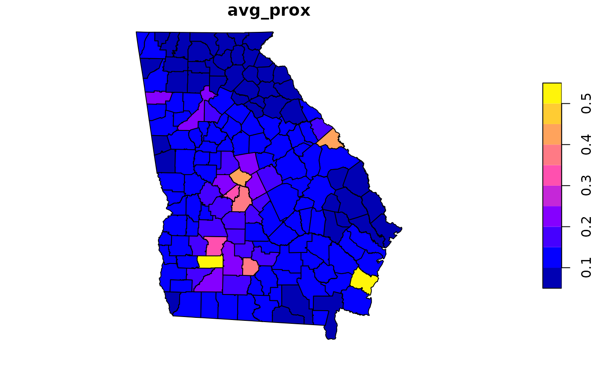

avg_proximity
avg_proximity.RdFunction to calculate average proximity to environmental hazards within a specified area. The function will calculate a population weighted average if the user supplies a vector of population counts or weights.
Arguments
- from
A spatial polygon layer with class sf or sfc. Proximity is calculated from the geometric center of each polygon to each hazard within the search tolerance.
- to
A spatial polygon, point, or linestring layer with class sf or sfc representing the environmental hazard(s) of interest.
- ...
Additional parameters
- group
Name of grouping variable in the
fromlayer. Average proximity is calculated among polygons nested in the group.- pop_weights
An optional vector of population weights if weighted-averages are desired.
Examples
#find average census tract proximity to Superfund sites by county
ga$County <- substr(ga$GEOID, 1, 5)
counties <- avg_proximity(ga, npls, group='County')
plot(counties['avg_prox'])

#find population-weighted average tract proximity to Superfund sites by county
counties_wt <- avg_proximity(ga, npls, group='County', pop_weights = ga$POP)